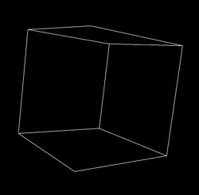
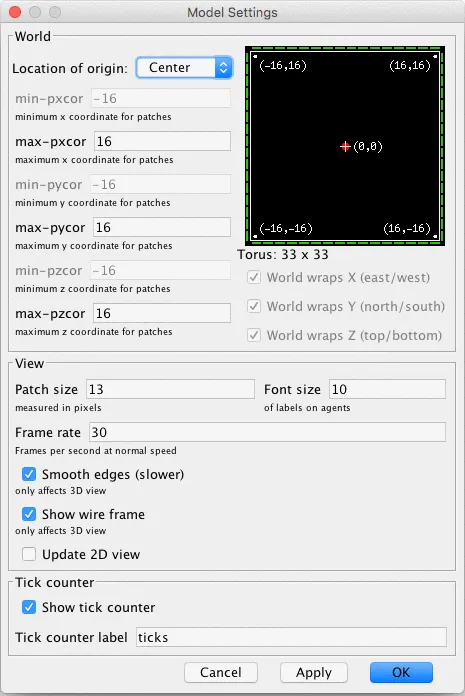
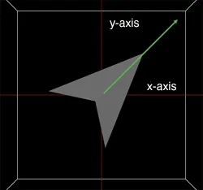
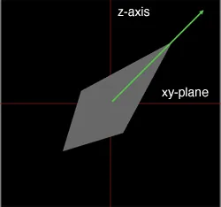
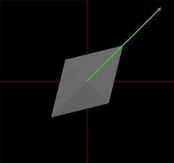
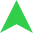

NetLogo 3D
NetLogo includes the NetLogo 3D application that allows you to create 3D worlds.
Notice: NetLogo’s support for 3D is less developed than NetLogo 2D. Models created with this release may not be compatible with future versions. While we’ve made efforts to ensure a quality product, NetLogo 3D has not been subject to the same level of quality control as the main application.
Introduction
To get started using NetLogo 3D, launch the NetLogo 3D application and check out the Sample Models in the 3D section of the Models Library.
When you’re ready to write your own 3D model, look at the Code Examples in the 3D section of the Models Library.
Code Example: Turtle Perspective Example 3D helps you learn about the different perspectives. Code Example: Turtle and Observer Motion Example 3D helps you understand how turtles and the observer move in 3D. You can also step through this model with the tutorial below.
3D Worlds
An unspeakable horror seized me. There was a darkness; then a dizzy, sickening sensation of sight that was not like seeing; I saw a Line that was no Line; Space that was not Space: I was myself, and not myself. When I could find voice, I shrieked loud in agony, "Either this is madness or it is Hell."
“It is neither,” calmly replied the voice of the Sphere, “it is Knowledge; it is Three Dimensions: open your eye once again and try to look steadily.”
— Edwin A. Abbott, Flatland: A romance in many dimensions
NetLogo 3D’s world has width, height and depth. Patches are cubes. In
addition to pxcor and pycor, patches have pzcor.
Turtles have three Cartesian coordinates, instead of two, to describe
position. In addition to xcor and ycor, turtles have zcor.
A turtle’s orientation is defined by three turtle variables,
heading, pitch, and roll.
You can imagine the turtle as having two vectors to define its
orientation in 3D space. One vector comes straight out of the nose of the
turtle, this is the direction the turtle will travel when it moves forward.
The second vector is perpendicular to the forward vector and comes out of
the right side of the turtle (as if the turtle were to stick its right arm
straight out from its body). Heading is the angle between the forward vector
of the turtle projected onto the xy-plane and the vector 0 1 0. Pitch is
the angle between the forward vector of the turtle and the xy-plane and
finally roll is the angle between the right vector of the turtle and the
xy-plane. When turtle turns right or left in 3D space it rotates around the
down vector, that is the vector that is perpendicular to both the forward
and right vectors. Depending on the orientation of the turtle more than one
of the internal turtle variables may change as the result of a turn.
The observer and the 3D view
The point of view that you see the world from is considered the location and
orientation of the observer. This is similar to the 3D view in NetLogo 2D.
However, there are a few more ways to control the observer. You can set the
point that the observer is facing by using
face and facexyz which work the same way as the
turtle commands, the observer turns so the center of the view is on the
given point or the location of the given agent at the time it is called. You
can change the location of the observer using setxyz. The
observer will move to view the world as if standing on the given location,
the point the observer faces will stay the same. For example create a new
model and observer will be located at (0, 0, 49.5), that is, on the z-axis
49.5 patch units away from the origin and the observer is facing the origin,
(0, 0, 0). If you setxyz 0 49.5 0 the observer will move so it
is on the positive y-axis but it will keep the origin at the center of the
view. You can also move the observer using the rotation primitives that will
allow you to move the observer around the world as if on the surface of a
sphere where the center is the location the observer is facing. You may
notice from the above examples that the observer is not constrained to be
within the bounds of the world.
Custom Shapes
NetLogo automatically interprets 2D shapes so they are extruded, like a
cookie cutter shape in the 3D view. You can also use the primitive
load-shapes-3d to load shapes
described in an external file in a custom format described here. Currently
we do not import shapes in any standard formats.
For each shape in a custom 3D shape file, a 2D shape of the same name must exist as well. You can create the 2D shape in the Turtle Shapes Editor.
The input file may contain any number of shapes with any number of rectangular or triangular surfaces. The format of the input file should be as follows:
number of shapes in file
name of first shape
type of surface ( quads or tris )
surface1
surface2
.
.
.
stop
type of surface
surfaceA
.
.
.
stop
end-shapeEach surface is defined by a unit normal vector and the vertices listed in clockwise order, tris should have three vertices and quads should have four.
normal: xn yn zn
x1 y1 z1
x2 y2 z2
x3 y3 z3
x4 y4 z4A file declaring just a two dimensional, patch-sized, square in the xy-plane centered at the origin would look like this:
1
square
quads
normal: 0 0 1
0.15 0.15 0
-0.15 0.15 0
-0.15 -0.15 0
0.15 -0.15 0
normal: 0 0 -1
0.15 0.15 0
0.15 -0.15 0
-0.15 -0.15 0
-0.15 0.15 0
stop
end-shapeTutorial
Step 1: Depth
One of the first things you will notice when you open NetLogo 3D is that the world is a cube instead of a square.

You can open up the Model Settings, by clicking on the
“Settings…” button at the top of the 3D View. You’ll notice in
addition to max-pxcor, min-pxcor,
max-pycor, and min-pycor, there is also
max-pzcor and min-pzcor.

The z-axis is perpendicular to both the x-axis and the y-axis, when you
reset-perspective it is the axis that comes straight out of the
screen. In the default position max-pzcor is the face of the
cube nearest to you and min-pzcor is the face farthest from
you. As always min-pxcor is on the left,
max-pxcor on the right, min-pycor on the bottom,
and max-pycor on the top.
You’ll also notice on the left side of the Model Settings that there are options for wrapping in all three directions, however, they are all checked and grayed out. Topologies are not yet supported in NetLogo 3D, so the world always wraps in all dimensions.
- Move to the Command Center and type
print count patches.Is the number smaller or larger than you expected?
In a 3D world the number of patches grows very quickly since
count patches = world-width * world-height * world-depth. It’s
important to keep this in mind when you are building your model. Lots of
patches can slow your model down or even cause NetLogo to run out of memory.
- Type
ask patch 1 2 3 [ set pcolor red ]into the Command Center.- Use the mouse in the 3D view to rotate the world
Notice the shape of the patch and its position in relation to the edges of the world. You’ll also notice that you now need three coordinates to address patches in a 3D world.
Step 2: Turtle Movement
- Open the Models Library in the File menu. (If you are on a Mac and you don’t have a File menu, click on the main NetLogo window first and it should reappear.)
- Open Turtle and Observer Motion Example 3D in 3D/Code Examples
Take a moment to look for the controls and monitors. In the bottom left you’ll notice a group of monitors that describe the location and orientation of the turtle, though until you press the setup button they’ll all say “N/A”.
- Press the “setup” button
Heading, pitch, and roll are turtle variables that represent the orientation of the turtle. Heading is absolute in relation to the x/y plane; it is the rotation of the turtle around the z-axis.

Pitch is the angle between the nose of the turtle and the xy-plane. It is relative to heading.

Roll is the rotation around the turtle’s forward vector. It is relative to heading and pitch.

When turtles are created with create-turtles or
create-ordered-turtles, their initial headings vary but their
initial pitch and roll are always zero.
Take a look at the “Turtle Movement” buttons.
- Press the “left 1” button.
How does the turtle move? Is is the same or different from 2D NetLogo? Which of the turtle variables change?
- Press the “pitch-down 1” button.
How does the turtle move? Which of the turtle variables change?
- Press the “left 1” button again.
How does the turtle move? Is it different than the last time you pressed the “left 1” button?
- Take a little time to play with the Turtle Movement buttons, watching both how the turtle moves and which of the turtle variables change.
You probably noticed that often more than one of the turtle variables may change for a single turn. For this reason we suggest that you use the turtle commands rather than setting the orientation variables directly.
Step 3: Observer Movement
At the bottom of the interface you will see Orbit, Zoom, and Move buttons. If you have ever used the 3D view in NetLogo 2D or if you have been using the mouse controls in the 3D view through this tutorial you have been moving the observer. Changing the point of view in the 3D view is actually moving and changing the orientation of the observer. The observer has x, y and z coordinates, just like a turtle or patch, while turtles and patches are constrained to be inside the world the observer can be anywhere. Like a turtle the observer has a heading, pitch and roll, these variables control where the observer is looking, that is, what you see in the view.
- Move to the 3D view, and make sure “Orbit” is selected in the bottom left corner of the view.
- Click and hold the mouse button in the middle of the view, move the mouse left, right, up, and down.
How does the position and orientation of the observer change?
- Press the reset-perspective button in the lower right corner of the view and select “Zoom” in the lower left corner.
- Click and hold the mouse button in the middle of the view and move the mouse up and down.
Which of the observer variables change? Which stay the same?
- Try rotating the world a bit and then zoom again.
- Press the “Move” button in the lower left corner of the view.
- Click and hold the mouse button in the middle of the view and move the mouse up, down, left and right.
How does the view change? How do the observer variables change?
After you are done exploring the world using the mouse controls you can take a look at the observer control buttons in the lower left portion of the interface.
You may already be familiar with the first three buttons in the observer group from your experience with NetLogo 2D. Watch, follow, and ride, are special modes that automatically update the position and orientation of the observer. When in follow or ride mode, the observer position and orientation are the same as the turtle’s. Note that follow and ride are functionally exactly the same, the difference is only visual in the 3D view. When in watch mode the observer does not move but updates to face the target agent.
- Press the “setup” button again so you are back to the default orientation.
- Press the “orbit-right” button.
How did the view change? Was it what you expected? How is it similar or different from using the mouse controls?
- Take a little time to experiment with orbit, roll and zoom buttons; notice similarities and differences to the mouse controls.
The direction of the orbit commands refer to the direction that the observer moves. That is, imagine that the observer is on the surface of a sphere, the center of the sphere is the point that the observer is facing represented by the blue cross, by default (0,0,0). The observer will always face the center of the sphere and the radius of the sphere will remain constant. The directions, up, down, left, and right, refer to moving along the lines of latitude and the lines of longitude of the sphere. When you zoom the radius of the sphere changes but the center and the observer’s orientation in relation to the center of the sphere will remain the same.
- Press one of the “setxyz” buttons.
How does the view change? How do the observer variables change?
- Press the “facexyz” button.
How does the view change? How do the observer variables change?
When you setxyz the center of the sphere remains the same (so
the observer automatically keeps that point in the center of the view.)
However, the radius of the sphere may change as well as the observer’s
orientation in relation to the center. When you facexyz or
face, the center of the sphere changes but the observer does
not move. The radius of the sphere may change, as well as the orientation of
the observer.
Dictionary
Commands and Reporters
at-points · distancexyz
(distancexyz-nowrap)
· distancexyz
(distancexyz-nowrap)
· dz · face
(facexyz)
· left · link-pitch · load-shapes-3d · max-pzcor
(min-pzcor)
· neighbors
(neighbors6)
· orbit-down
(orbit-left, orbit-right, orbit-up)
· __oxcor
(__oycor, __ozcor)
· patch · patch-at · patch-at · patch-at-heading-pitch-and-distance · patch-at-heading-pitch-and-distance · random-pzcor · random-zcor · right · roll-left · roll-right · setxyz · setxyz · tilt-down
(tilt-up)
· towards-pitch
(towards-pitch-nowrap)
· towards-pitch-xyz
(towards-pitch-xyz-nowrap)
· turtles-at
(<breeds>-at)
· turtles-at
(<breeds>-at)
· world-depth · zoom
Built-In Variables
Primitives
at-points 4.1
agentset at-points [[x1 y1 z1] x2 y2 z2 …]
Reports a subset of the given agentset that includes only the agents on the patches the given distances away from this agent. The distances are specified as a list of three-item lists, where the three items are the x, y, and z offsets.
If the caller is the observer, then the points are measured relative to the origin, in other words, the points are taken as absolute patch coordinates.
If the caller is a turtle, the points are measured relative to the turtle’s exact location, and not from the center of the patch under the turtle.
ask turtles at-points [[2 4 0] [1 2 1] [10 15 10]]
[ fd 1 ] ;; only the turtles on the patches at the
;; distances (2,4,0), (1,2,1) and (10,15,10),
;; relative to the caller, move
distancexyz 4.1 distancexyz-nowrap 4.1
distancexyz xcor ycor zcor
distancexyz-nowrap xcor ycor zcor

3D versions of distancexy.
Reports the distance from this agent to the point (xcor, ycor, zcor).
The distance from a patch is measured from the center of the patch.
distancexyz-nowrap always reports the in world distance, never a distance that would require wrapping around the edges of the world. With distancexyz the wrapped distance (around the edges of the world) is used if that distance is shorter than the in world distance.
if (distancexyz 0 0 0) < 10
[ set color green ]
;; all turtles less than 10 units from
;; the center of the screen turn green.
dz 4.1
dz
Reports the z-increment (the amount by which the turtle’s zcor would change) if the turtle were to take one step forward at its current heading and pitch.
NOTE: dz is simply the sine of the turtle’s pitch. Both dx and dy have changed in this case. So, dx = cos(pitch) * sin(heading) and dy = cos(pitch) * cos(heading).
face facexyz 4.1
face agent
facexyz x y z

Set the caller’s heading and pitch towards agent or towards the point (x,y,z).
If the caller and the target are at the same x and y coordinates the caller’s heading will not change. If the caller and the target are also at the same z coordinate the pitch will not change either.
left 4.1
left number
The turtle turns left by number degrees, relative to its current orientation. While left in a 2D world only modifies the turtle’s heading, left in a 3D world may also modify the turtle’s pitch and roll.
link-pitch 4.1.2
link-pitch

Reports the pitch from end1 to end2 of this link.
ask link 0 1 [ print link-pitch ]
;; prints [[towards-pitch other-end] of end1] of link 0 1
See also link-heading, pitch
load-shapes-3d 4.1
load-shapes-3d filename
Loads custom 3D shapes from the given file. See the 3D guide for more details. You must also add a 2D shape of the same name to the model using the Turtle Shapes Editor. Custom shapes override built-in 3D shapes and converted 2D shapes.
max-pzcor 4.1 min-pzcor 4.1
max-pzcor
min-pzcor
These reporters give the maximum and minimum z-coordinates (respectively) for patches, which determines the size of the world.
Unlike in older versions of NetLogo the origin does not have to be at the center of the world. However, the minimum z-coordinate has to be less than or equal to 0 and the maximum z-coordinate has to be greater than or equal to 0.
Note: You can set the size of the world only by editing the view — these are reporters which cannot be set.
See also max-pxcor, max-pycor, min-pxcor, min-pycor, and world-depth.
neighbors 4.1 neighbors6 4.1
neighbors
neighbors6
3D versions of neighbors and neighbors4.
Reports an agentset containing the 26 surrounding patches (neighbors) or 6 surrounding patches (neighbors6).
show sum values-from neighbors [count turtles-here]
;; prints the total number of turtles on the twenty-six
;; patches around this turtle or patch
ask neighbors6 [ set pcolor red ]
;; turns the six neighboring patches red
orbit-down 4.1 orbit-left 4.1 orbit-right 4.1 orbit-up 4.1
orbit-down number
orbit-left number
orbit-right number
orbit-up number
Rotate the observer around the last point faced. Imagine the observer is on the surface of a sphere, the last point face is the center of that sphere. Up and down orbit along the lines of longitude and right and left orbit along the lines of latitude. The observer will remain facing the last point faced so the heading and pitch may change as result of orbiting. However, because we assume an absolute north pole (parallel to the positive z-axis) the roll will never change.
__oxcor __oycor __ozcor
__oxcor
__oycor
__ozcor
Reports the x-, y-, or z-coordinate of the observer.
See also setxyz
patch 4.1
patch x y z
3D version of patch.
Given three integers, reports the single patch with the given pxcor, pycor and pzcor. pxcor, pycor and pzcormust be integers.
ask (patch 3 -4 2) [ set pcolor green ]
;; patch with pxcor of 3 and pycor of -4 and pzcor of 2 turns green
See also patch
patch-at 4.1
patch-at dx dy dz
3D version of patch-at.
Reports the single patch at (dx, dy, dz) from the caller, that is, dx patches east, dy patches north and dz patches up from the caller.
ask patch-at 1 -1 1 [ set pcolor green ]
;; turns the patch just southeast and up from the caller green
patch-at-heading-pitch-and-distance 4.1
patch-at-heading-pitch-and-distance heading pitch distance
3D version of patch-at-heading-and-distance.
patch-at-heading-pitch-and-distance reports the single patch that is the given distance from this turtle or patch, along the given absolute heading and pitch. (In contrast to patch-left-and-ahead and patch-right-and-ahead, this turtle’s current heading is not taken into account.)
ask patch-at-heading-pitch-and-distance 0 90 1 [ set pcolor green ]
;; turns the patch directly above the caller green.
pitch
pitch
This is a built-in turtle variable. Pitch is the angle between the “nose” of the turtle and the xy-plane. Heading and pitch together define the forward vector of the turtle or the direction that the turtle is facing.
This is a number greater than or equal to 0 and less than 360. 0 is parallel to the xy-plane, 90 is parallel to the z-axis. While you can set pitch we recommend that you use the primitives to turn the turtle. Depending on the position more than one relative angle (heading, pitch and roll) may change at once.
Example:
;; assume roll and heading are 0
set pitch 45 ;; turtle is now north and up
set heading heading + 10 ;; same effect as "tilt-up 10"
pzcor
pzcor
This is a built-in patch variable. It holds the z coordinate of the patch. It is always an integer. You cannot set this variable, because patches don’t move.
pzcor is greater than or equal to min-pzcor and less than or equal to max-pzcor.
All patch variables can be directly accessed by any turtle standing on the patch.
See also pxcor, pycor, zcor.
random-pzcor 4.1
random-pzcor
Reports a random integer ranging from min-pzcor to max-pzcor inclusive.
ask turtles [
;; move each turtle to the center of a random patch
setxyz random-pxcor random-pycor random-pzcor
]
See also random-pxcor, random-pycor.
random-zcor 4.1
random-zcor
Reports a random floating point number from the allowable range of turtle coordinates along the z axis.
Turtle coordinates range from min-pzcor - 0.5 (inclusive) to max-pzcor + 0.5 (exclusive).
ask turtles [
;; move each turtle to a random point
setxyz random-xcor random-ycor random-zcor
]
See also random-xcor, random-ycor.
right 4.1
right number
The turtle turns right by number degrees, relative to its current orientation. While right in a 2D world only modifies the turtle’s heading, right in a 3D world may also modify the turtle’s pitch and roll.
roll
roll
This is a built-in turtle variable. Roll is the angle between the “wing-tip” of the turtle and the xy-plane.
This is a number greater than or equal to 0 and less than 360. You can set this variable to make a turtle roll. Since roll is always from the turtle’s point of view, rolling right and left only only change roll regardless of turtle orientation.
Example:
set roll 45 ;; turtle rotated right
set roll roll + 10 ;; same effect as "roll-right 10"
See also heading, pitch, roll-left, roll-right.
roll-left 4.1
roll-left number
The wingtip of the turtle rotates to the left number degrees with respect to the current heading and pitch.
roll-right 4.1
roll-right number
The wingtip of the turtle rotates to the right numberdegrees with respect to the current heading and pitch.
setxyz 4.1
setxyz x y z
3D version of setxy.
The agent, a turtle or the observer, sets its x-coordinate to x, its y-coordinate to y and its z-coordinate to z. When the observer uses setxyz it remains facing the same point so the heading, pitch, and roll, may also change.
For turtles equivalent to set xcor x set ycor y set zcor z, except it happens in one time step
instead of three.
setxyz 0 0 0
;; agent moves to the middle of the center patch
See also face
tilt-down 4.1 tilt-up 4.1
tilt-down number
tilt-up number
The nose of the turtle rotates by number degrees, relative to its current orientation. Depending on the orientation of the turtle more than one of the relative angles (heading, pitch, and roll) may change when a turtle turns.
towards-pitch 4.1 towards-pitch-nowrap 4.1
towards-pitch agent
towards-pitch-nowrap agent
Reports the pitch from this agent to the given agent.
If the wrapped distance (around the edges of the screen) is shorter than the on-screen distance, towards-pitch will report the pitch of the wrapped path. towards-pitch-nowrap never uses the wrapped path.
Note: In order to get one turtle to face another you need to use both towards-pitch and towards.
Note: asking for the pitch from an agent to itself, or an agent on the same location, will cause a runtime error.
See also towards
towards-pitch-xyz 4.1 towards-pitch-xyz-nowrap 4.1
towards-pitch-xyz x y z
towards-pitch-xyz-no-wrap x y z
Reports the pitch from this agent to the coordinates x, y, z
If the wrapped distance (around the edges of the screen) is shorter than the on-screen distance, towards-pitch will report the pitch of the wrapped path. towards-pitch-nowrap never uses the wrapped path.
Note: In order to get a turtle to face a given location you need to use both towards-pitch-xyz and towardsxy.
Note: asking for the pitch from an agent to the location it is standing on will cause a runtime error.
See also towardsxy
turtles-at 4.1 <breeds>-at
turtles-at dx dy dz
<breeds>-at dx dy dz
3D versions of turtles-at and breeds-at.
Reports an agentset containing the turtles on the patch (dx, dy, dz) from the caller (including the caller itself if it’s a turtle).
;; suppose I have 40 turtles at the origin
show [count turtles-at 0 0 0] of turtle 0
=> 40
world-depth 4.1
world-depth
Reports the total depth of the NetLogo world.
The depth of the world is the same as max-pzcor - min-pzcor + 1.
See also max-pzcor, min-pzcor, world-width,
and world-height
zcor
zcor
This is a built-in turtle variable. It holds the current z coordinate of the turtle. This is a floating point number, not an integer. You can set this variable to change the turtle’s location.
This variable is always greater than or equal to (- screen-edge-z) and strictly less than screen-edge-z.
zoom 4.1
zoom number
Move the observer toward the point it is facing, number steps. The observer will never move beyond the point it is facing so if number is greater than the distance to that point it will only move as far as the point it is facing.